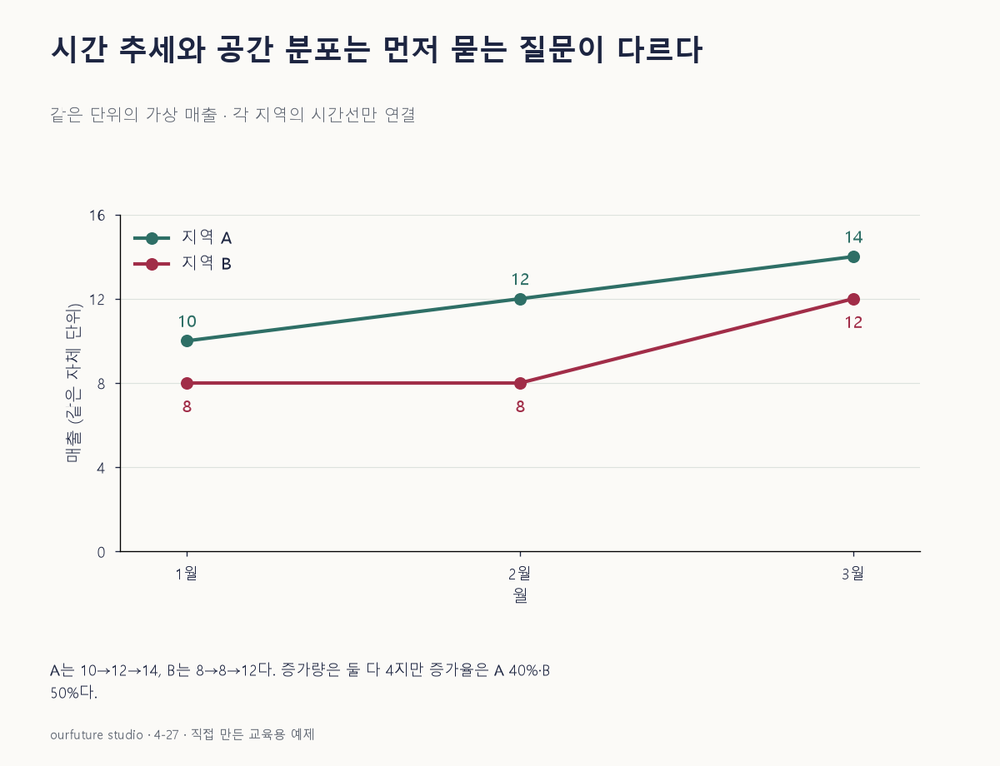

조건을 바꾸며 확인하기
표현 선택의 교육용 판단이다. 실제 지역 자료·상업 성과나 지도 품질을 평가하지 않는다.
설명 그림과 비교하기
아래 그림과 표는 고정된 설명 예제입니다. 기본·변형 중 어떤 조건인지 캡션을 읽고, 바꾼 입력의 결과는 계산 칸에서 확인하세요.

같은 문제를 직접 골라 보기
가상 지역 A의 1·2·3월 매출은 각각 10·12·14다. 목적은 A의 월별 추세와 변화 시점 확인이다.
조건을 더 바꾸면?
A는 1월 10→3월 14, B는 8→12다. 증가량과 증가율이 모두 같은가?
변형 풀이 확인
증가량은 둘 다 4지만 증가율은 A40%, B50%로 다르다.
시간 그래프를 해석할 때도 변화량의 분모를 확인한다. 같은 절대 증가를 같은 비율 증가로 읽지 않는다.
어디의 차이인가, 언제의 변화인가.